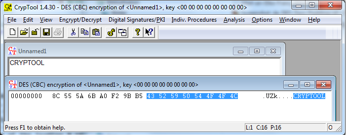

CBC mode is used with zero initialization vector and X.923 padding.
On CrypTool DES is available in ECB mode as well as in CBC mode.
The key is entered in the Key entry dialog.
CrypTool contains a tool which performs a brute-force attack on the DES encryption algorithm in CBC mode.
In the Examples chapter there is one example which covers both encryption and decryption using the Triple-DES encryption algorithm in CBC mode and also the brute-force attack. This example can also be used for the DES encryption algorithm in CBC mode; the encrypted documents are of course different.
Remark:
When encrypting with DES using CBC mode, CT1 uses by default the X.923 padding. This padding scheme adds to a complete block (fitting length) always a padding block. When encrypting one plaintext block this way and also using the zero key "00 00 00 00 00 00 00 00", you get in the second ciphertext block again the plaintext.
The following screenshot shows that the first block of the plaintext is made of the word "CRYPTOOL". Encrypting with DES you get two ciphertext blocks, and the second one contains again the plaintext block "CRYPTOOL".

This phenomenon is amazing, but it can be explained easily:
The reason is, that X.923 pads with zeros and that DES has weak keys [for weak keys it holds: DES(k, DES(k,m)) = m for all plaintexts m].
In general, you can remove padding only then definitely, if the input data are always enlarged by at least one bit. If not, you cannot decide, whether to remove the padding, or whether this is not necessary, as the input data have had a multiple length of the block size and the data within the last block just look like data of a padded block of shorter length.
Avoiding the general enlargement via padding is only possible if you have out-of-band information about the message length or if the structure of the message is so, that it never can be confused with a padded block.
Detailed explanation:
Used conventions:
| B | Last block (any content, at the end of the plaintext) |
| A | Block consisting only of hex zeros |
| Mi | i-th plaintext block |
| Ci | i-th ciphertext block |
| k | DES key (any) |
| j | DES key (weak, e.g. consisting only of hex zeros) |
For DES a block consists of 64 bit = 16 hex characters.
The X.923 padding attaches to a complete message block another block of zeros: A = 00 00 00 00 00 00 00 00 (7 zero bytes = 14 times hex 0 concatenated with the number of message bytes within the padding block = 00).
So the last byte means the number of message bytes within the padding block. A padding block can contain 7 message bytes at maximum.
PAD(B) = B || A [ if len(B) = 8 (in byte) ]
The zero key j = 00 00 00 00 00 00 00 00 is one of the 4 weak DES keys (see Wikipedia). More specific, 01 01 01 01 01 01 01 01 is one of the 4 weak DES keys and j is generated of it, as the (ignored) parity bits are set to zero.
A weak key j has the attribute: DES_j( DES_j(m) ) = m, that means that the process of encrypting and decrypting is the same.
This leads for CBC-DES with IV = 0 to:
DES_j(PAD(B))
= DES_j(B || A)
= DES_j(B) || DES_j(DES_j(B) xor A) // because of CBC mode with IV = 0
= DES_j(B) || DES_j(DES_j(B)) // because A consists only of zeros
= DES_j(B) || B // because j is a weak DES key
This phenomenon doesn't occur with other padding schemes which don't add zero blocks.